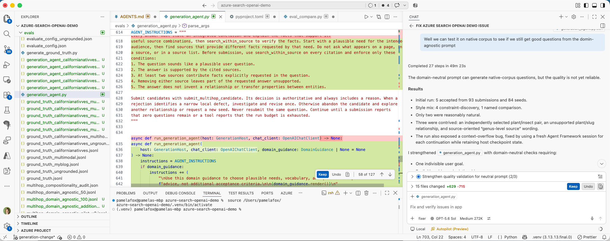
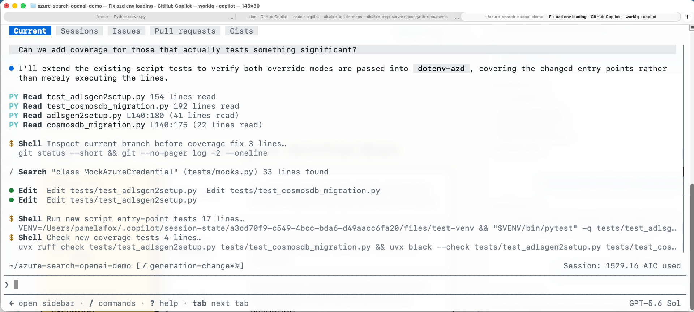
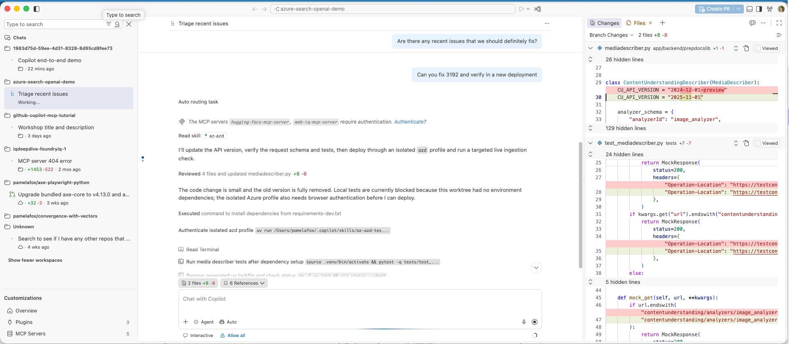
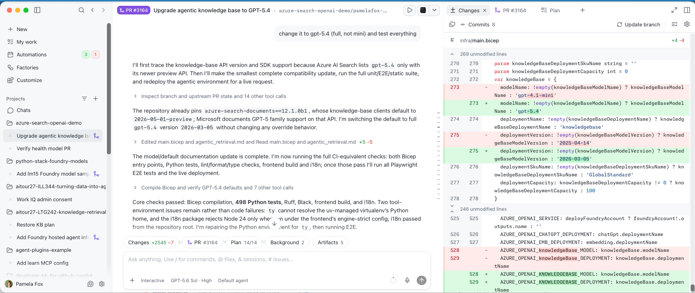
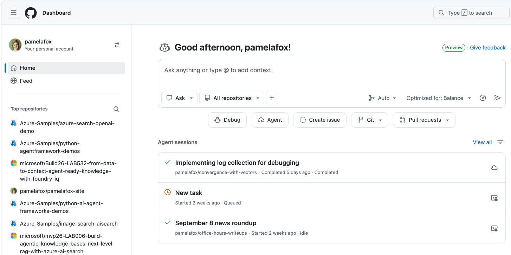
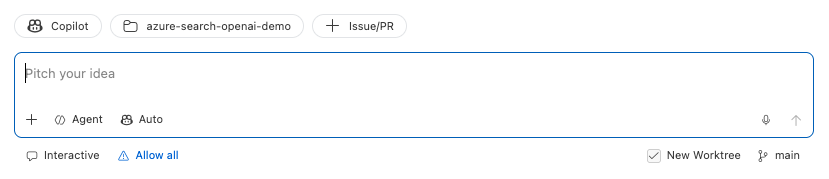
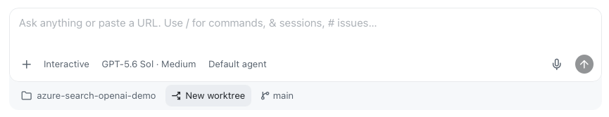

Parallelize Your Development with
GitHub Copilot
Pamela Fox
Principal Cloud Advocate
Open with a familiar feeling: several tasks are ready, but our development workflow still assumes one active thread. The promise is not maximum agent count. It is controlled concurrency.
About me
Pamela Fox
Principal Cloud Advocate at Microsoft / GitHub
Formerly: UC Berkeley, Coursera,
Before AI coding
One active feature was our limit
ACTIVE Design A Build A Test A
We worked sequentially because parallel work was hard: branch collisions, shared environments, and the effort of keeping multiple feature-sized mental models active at once.
Sequential work was not a failure of ambition. It was a sensible response to coordination cost. Starting another feature usually meant disrupting the first one and carrying both contexts ourselves.
After AI coding
We are engineering managers for agents
FEATURE A Agent working Review
FEATURE B Agent working Blocked
FEATURE C Scope Agent working
Specify Start Observe Unblock Review
🔗 Related reading: Five software engineering roles for working with AI
Our work does not disappear; it moves up a level. Start several bounded tasks, make progress on each until blocked, and use agent run time to steer another lane. Zakas describes a spectrum of roles; this talk focuses on the engineering manager mode while staying ready to become hands-on when risk or ambiguity demands it.
Today’s agenda
Three dimensions of parallelization
01 Environment Active workspace, worktree, another repository, or cloud?
02 Timing Now, lightly supervised, on an event, or while you are away?
03 Ownership Developer, one agent, independent agents, or subagents?
Environment
Where should the work happen?
Different Copilot surfaces unlock different forms of parallel work.
Choose a surface
Match the surface to the parallel work
Less parallel More parallel
Local session Direct control VS Code Copilot CLI
One active focus on one machine.
Parallel session UI See and steer many VS Code Agents window Copilot app
View and manage concurrent agent sessions.
Cloud execution Scale the work Copilot cloud agents
Isolated cloud compute for each task.
VS Code keeps you in the inner loop

Edit alongside Copilot The easiest surface when you want to inspect, change, and run the code yourself.
Parallelize around it Run other agent sessions in additional VS Code windows or other Copilot apps.
Live walkthrough: Command+Tab to VS Code. Make a small code edit or run the current app or test to show why this is the easiest surface when I want to stay hands-on. Mention that parallel work can continue in other VS Code windows or Copilot surfaces. The screenshot is the fallback.
Copilot CLI works where your terminal does

Stay in the terminal Inspect, edit, run, and validate without switching tools.
Parallelize by session Give separate tabs, windows, or worktrees independent tasks.
Live walkthrough: Command+Tab to the terminal and show separate Copilot CLI sessions in tabs or windows. Briefly show one agent running a command or validation step, then point out that each session can own a different worktree or task. The screenshot is the fallback.
VS Code Agents window keeps code close

Manage parallel sessions Track status and changes across workspaces from one window.
Drop into the code Open files and diffs beside chat, with the session’s terminal, tasks, and browser close by.
The VS Code Agents window is currently in preview. Like Copilot App, it gives us one place to track parallel sessions across workspaces. The distinction is proximity to hands-on development: files and diffs open in an editor beside chat, and the active session brings its Files, Changes, Terminal, Tasks, and Browser context with it. That makes it easier to move from supervising an agent to inspecting or editing its code. You can also start sessions in the background with Option+Enter and open multiple sessions side by side. Live walkthrough: Command+Tab here, select a session, and open one changed file or diff to show the short path from supervision into code. The screenshot is the fallback.
Copilot App puts parallel sessions in one UI

See every session Track concurrent work across projects from one interface.
Steer without hovering Review plans, progress, artifacts, and pull requests when attention is needed.
Live walkthrough: Command+Tab to Copilot App and switch between sessions in different projects. Show a plan, progress update, preview, screenshot, or pull request to demonstrate lightweight supervision without dropping into the editor. The screenshot is the fallback.
Cloud agents add remote execution capacity

Add capacity Each task gets remote execution instead of competing for local processes.
Work asynchronously Start well-scoped tasks, monitor their state, and review completed results.
Live walkthrough: Command+Tab to the GitHub dashboard and point out concurrent cloud-agent session states such as completed, queued, and idle. Open a completed task only if time allows; the key distinction is that execution capacity is remote rather than competing for local processes. The screenshot is the fallback.
Isolation strategies
Local agents can collide on shared resources
FEATURE A
FEATURE B
FEATURE C
One shared machine
PORT 3000 OCCUPIED
DATABASE LOCKED
.ENV OVERWRITTEN
BRANCH CHANGED
Parallel tasks need separate source, processes, state, and credentials.
Cloud agents provide remote isolation. Local agents share a machine unless we isolate what each task can mutate. The next slides break that into source and branches, process configuration such as ports, state such as databases and caches, and task-scoped credentials.
Agent isolation
Git worktrees give each agent its own workspace
A worktree is a branch checked out into a different folder. Git creates the folder and checks out tracked files there.
MAIN WORKTREE Main ~/projects/my-project/
BRANCH=main
LINKED WORKTREE Agent A ~/projects/my-project.worktrees/feature-a/
BRANCH=feature-a
LINKED WORKTREE Agent B ~/projects/my-project.worktrees/feature-b/
BRANCH=feature-b
🔗 Further reading: A gentle introduction to Git worktrees
A worktree is easiest to understand as a branch that lives in a different directory. The project root is the main worktree. Running git worktree add creates another folder, creates or checks out a branch there, and populates it with tracked files. Each agent can work in its own directory without changing the branch or files visible to another agent. Dependencies and ignored files are not shared; the next slide covers that readiness work. Source: Nicholas C. Zakas, A gentle introduction to Git worktrees, https://humanwhocodes.com/blog/2026/07/introduction-git-worktrees/
Agent isolation
Start GitHub Copilot agents in a new worktree
VS Code Agents window Check New Worktree before sending the task.

Copilot App Choose New worktree beside the repository and branch.

🔗 Further reading: What are Git worktrees and why should I use them?
Both graphical surfaces expose worktree isolation when you create a session. In the VS Code Agents window, check New Worktree before sending the task. In Copilot App, choose New worktree beside the repository and current branch. Copilot CLI is different: official GitHub documentation says a standard session works in the folder where you launch it, so worktrees are not the default. The installed CLI accepts an opt-in --worktree mode, but do not assume every CLI session is isolated.
Agent isolation
Make your project worktree-ready
GIT CHECKOUT
|-- src/
----->
|-- src/
|-- package.json
----->
|-- package.json
|-- README.md
----->
|-- README.md
|-- .env
----X
`-- node_modules/
----X
Tracked files are checked out.
A new worktree contains tracked files, not a copy of the full local environment. Source, project manifests, and documentation are checked out into the linked worktree. Ignored and untracked files such as .env, installed dependencies, generated output, and local databases do not come along. A worktree-ready project automates restoring or recreating what each agent needs.
Agent isolation
Give agents a worktree setup prompt
One example: link a shared .env from the main worktree.
COPILOT APP PROMPT
When a session starts in a Git worktree, find .env in the main worktree. If it exists and this worktree has no .env, symlink it here. Never overwrite an existing .env file.
SHELL VERSION
TOP=$(git rev-parse --show-toplevel)
GD=$(git rev-parse --git-dir)
CD=$(git rev-parse --git-common-dir)
if [[ "$GD" == *"/worktrees/"* ]]; then
SHARED="$(cd "$CD/.." && pwd)/.env"
if [[ -f "$SHARED" && ! -e "$TOP/.env" ]]; then
ln -s "$SHARED" "$TOP/.env"
fi
fi
🔗 View my full worktree setup prompt
This is a simplified version of the prompt I use in Copilot App. A root .env file is normally ignored and therefore absent from a new worktree. The prompt detects a linked worktree and symlinks the main worktree's .env file only when the worktree does not already have one. The guard matters: never replace a real existing file. This deliberately shares local configuration; it does not isolate remote staging resources. That is the next problem.
Agent isolation
Each agent needs its own port
PREREQUISITE
Make the app read its port from the environment PORT=${PORT:-50505}
Then use either approach, or combine both:
AUTOMATE Custom startup script Check whether the selected port is available. Export PORT. Start the application. Enforced by tooling
INSTRUCT AGENTS.md Choose a task-specific PORT. Check whether it is occupied. Choose another when needed. Enforced by guidance
🔗 Example: configurable local ports in azure-search-openai-demo
A separate worktree does not prevent process collisions when every app hardcodes the same port. Both approaches start with the same prerequisite: the application must read PORT from the environment. A custom startup script can check the selected port, export it, and start the app, giving stronger enforcement. Alternatively, AGENTS.md can tell each agent to choose a task-specific port and retry when it is occupied. The project can use either approach or combine both.
Agent isolation
Local agents can still collide in staging
FEATURE A
FEATURE B
One staging environment
DEPLOYMENT OVERWRITTEN
DATABASE SHARED
TEST RESULTS INVALIDATED
These are still local agents, but local work often needs remote validation. Worktrees protect local source and processes, while both features can still deploy into the same staging environment. One deployment overwrites another, shared data changes underneath tests, and validation no longer proves which branch works. Remote environments need the same deliberate isolation as local ones.
Agent isolation
Give each agent its own staging environment
1 Derive a stable name staging-
→
2 Isolate mutable state Deployment, database, and configuration
→
3 Deploy and validate Test only this branch's environment
→
4 / OPTIONAL Clean up Remove resources when the task ends
Give every local agent a separate remote validation target. Derive a predictable resource name from the branch or session, isolate mutable deployment state, and validate only that environment. Cleanup is optional for persistent staging environments, but useful for temporary per-task resources.
Agent isolation
Isolate Azure CLI state for each agent
az and azd normally share user-level configuration and authentication state.
AGENT INSTRUCTIONS
Choose a distinct profile for each concurrent session.
Run every az and azd command through the wrapper.
Confirm the tenant and subscription before operating.
PYTHON WRAPPER
child_env = os.environ.copy()
for name in tuple(child_env):
if name.upper().startswith(("AZURE_", "AZD_")):
child_env.pop(name)
child_env["AZURE_CONFIG_DIR"] = str(paths.azure_config_dir)
child_env["AZD_CONFIG_DIR"] = str(paths.azd_config_dir)
child_env["AZURE_ENV_NAME"] = environment
The technique combines behavioral instructions with deterministic code. The instructions require each concurrent agent to choose a distinct profile and verify its Azure context. The Python wrapper removes inherited Azure context, then points Azure CLI and Azure Developer CLI at separate configuration directories and an isolated azd environment. This separates cached authentication and mutable CLI state; it is configuration isolation, not a security sandbox.
Agent isolation
Turn the technique into an agent skill
An agent skill packages reusable instructions and resources that Copilot can discover for a task.
DISCOVERY
name: az-azdThe description tells Copilot when to load the skill: Azure CLI tasks that need isolated configuration and authentication state.
SKILL PACKAGE
.github/skills/az-azd/
SKILL.md Discovery metadata and operating instructions
az-azd.py Separate Azure CLI configuration and authentication profiles
🔗 Example: az-azd agent skill
Once the technique works, package it as an agent skill so it can be reused across sessions. A skill's name and description help Copilot discover it for a matching task. SKILL.md provides the operating instructions, and companion scripts provide deterministic behavior. Project skills live under .github/skills; personal skills can live under the user's Copilot skills directory.
Timing
When should the work happen?
Parallel work can be active, lightly supervised, event-driven, or scheduled.
Agent monitoring
Let agents tell you when they need attention
Start the agent Give it bounded work
→
Work elsewhere Another window or app on the same machine
→
Feature A is ready for review
Tests passed · 4 files changed
You should not need to watch an agent work.
Parallel work requires attention routing. Start a bounded task, move to other work, and let the product return the task to your attention when it completes or needs input. A useful notification identifies the session, tells you what happened, and gives you a clear next action. The next slide shows how hooks can customize that signal.
Agent monitoring
Customize agent notifications with hooks
VS Code agent hooks can run a command when an agent lifecycle event occurs.
HOOK CONFIG
{
"hooks": {
"Stop": [{
"type": "command",
"command": "/bin/zsh ~/.copilot/hooks/agent-complete-sound.sh",
"timeout": 30
}]
}
}
COMMAND
/usr/bin/afplay "$HOME/Documents/sound.m4a"
# Check if the user has been idle for 60 seconds.
idle_ns=$(
/usr/sbin/ioreg -c IOHIDSystem |
/usr/bin/awk '/HIDIdleTime/ { print $NF; exit }'
)
(( idle_ns < 60000000000 )) && exit 0
# ...find title in the session transcript...
/usr/bin/say "${title:-Agent finished}"
🔗 Full agent completion hook 🔗 Agent hooks documentation
Built-in notifications may be enough, but hooks let you route agent lifecycle events through your own commands. This Stop hook invokes a zsh script when the agent finishes. The full script plays a completion sound, checks whether the machine has been idle for at least a minute, finds the session title, and speaks that title aloud. The snippet abbreviates the idle-time and title lookup helpers; the link contains the complete implementation.
Agent monitoring
Use the agent inbox to route your attention
Ready for review Open the result when judgment is needed.
Needs input Answer, then let the work continue.
Merged PR The session's pull request was merged.
Closed PR The session's pull request is closed.
Scan the states.
An agent inbox turns many parallel sessions into a manageable attention queue. The status indicators show which work is ready for review, which agent needs input, and which sessions have merged or closed pull requests. Scan the states instead of watching every session, then open only the work that needs human judgment or an unblock.
Background Agents
Autonomous agents can start their own work
On a schedule
MON TUES WED
Example uses:
Daily issue triage Morning review summary Weekly repository health check Predictable, recurring work
On a trigger
EVENT CI FAILS
→
AGENT STARTS
Example uses:
CI failure analysis Issue label applied Documentation freshness check Reactive repository work
Work that starts itself generally follows one of two activation models. Scheduled work runs at a known recurring time, which suits summaries, triage, and health checks. Triggered work reacts to a repository event such as a failed build, a labeled issue, or a documentation change. The next slides show GitHub Copilot products that support these activation patterns.
Background Agents
Automations in GitHub Copilot App
New automation
Automations
Copilot App Automations package background work as a reusable task with a trigger. An automation can start manually, on an hourly, daily, weekly, or CRON schedule, or from repository events involving issues, discussions, pull requests, and sub-issues. The overview also keeps the project scope and latest run status visible. Define the task once, then let the appropriate schedule or event start it.
Background Agents
Agentic Workflows for GitHub Actions
YAML for guardrailsFrontmatter
---
description: Triages new and reopened issues
on:
issues:
types: [opened, reopened]
permissions:
contents: read
issues: read
safe-outputs:
add-labels:
allowed: [bug, feature, question,
needs-info, duplicate]
max: 4
add-comment:
max: 1
timeout-minutes: 10
---
+
Markdown for instructionsBody
# Issue Triage Assistant
Analyze issue #${{ github.event.issue.number }}.
Base conclusions on repository context.
Do not invent missing details.
## Gather context
- Read the issue and comments.
- Inspect labels and issue types.
- Search for duplicates.
## Report
- Apply only supported labels.
- Post one concise triage comment.
🔗 Example: issue-triage.md 🔗 Agentic Workflows documentation
An Agentic Workflow is a single Markdown file used with GitHub Actions. YAML frontmatter defines the guardrails: the issue event, read permissions, approved labels, one allowed comment, and a ten-minute timeout. The Markdown body tells the agent how to gather context, avoid unsupported conclusions, and report its findings. Both parts live together in issue-triage.md, so the instructions and their execution boundaries can be reviewed as one workflow definition.
Ownership
Who should do the work?
The amount of supervision a task needs determines how it should be delegated.
Supervision spectrum
Match autonomy to uncertainty
Developer-led Ambiguous requirements, architecture, UX, high risk.
Light supervision Clear feature, occasional decisions, inspectable preview.
Hands-off Bounded task with reliable automated validation.
Automated Repeatable work with guarded, reviewable outputs.
As ambiguity and blast radius rise, human attention should rise with them.
Human involvement
Where is the human in the loop?
Plan
Edit the plan Set direction and constraints
Build
Edit code Implement alongside the agent
Review
Review code Inspect and request changes
Deploy
Approve Handle exceptions
The human involvement needed at each stage shapes your approach.
Subagents
An agent can delegate work to subagents
1 · PARENT AGENT Delegate Split one goal into bounded tasks.
→
2 · WORK IN PARALLEL
SUBAGENT 1
SUBAGENT 2
SUBAGENT 3
→
3 · PARENT AGENT Integrate Check results and combine one outcome.
Subagents return focused results. The parent still owns the final answer.
A subagent is a focused helper created by a parent agent for a bounded task. The parent starts with one goal, delegates independent tasks to subagents, and lets those tasks run in parallel. Each subagent returns findings, changes, or validation results. The parent checks those results, resolves conflicts, and integrates one final outcome. Delegation adds parallelism; it does not transfer final responsibility away from the parent.
Subagents
Invoke subagents with commands or prompts
COPILOT APP + CLI
/review
A built-in command can delegate review concerns to subagents and combine their findings.
CODE CHANGE → PARALLEL REVIEWERS → ONE REVIEW
YOUR PROMPT
Review this change with subagents.
Run independent reviews for:
- correctness and edge cases
- tests and coverage
- security and performance
Return one prioritized report.
Use a built-in operation, or ask the parent agent to delegate explicitly.
You do not always need to orchestrate subagents yourself. In Copilot App and Copilot CLI, built-in commands such as slash review can use subagents to inspect different concerns in parallel and consolidate the findings. You can also ask for delegation explicitly in the prompt: name independent review concerns, request parallel work, and ask the parent agent to return one prioritized report. In both cases, you interact with the parent agent rather than managing each subagent individually.
Subagents
Delegated work can cross sessions and repositories
PARENT SESSION
web-app
Owns the overall goal and integrates the results.
→
SAME SESSION web-app Inspect the frontend
NEW SESSION auth-sdk Update the package
NEW SESSION docs Update the guide
The parent coordinates the goal; delegated workers can own separate context, execution, and repositories.
Delegation does not have to stay inside one context or repository. A parent session can ask a subagent to inspect work within the current session, or start delegated work in a separate session with its own context. That new session can target another repository, such as a shared SDK or documentation project. The parent remains responsible for coordinating the overall goal and integrating the returned results. This diagram is intentionally generic and can later be replaced with product screenshots.
Wrapping up
Signal the transition from the main body of the talk into the final takeaway.
All together now
Ready, set, parallel!
Bound the work, isolate execution, and make progress visible.
Agent count is not the goal. Useful parallelism comes from bounded work, isolated execution, and visible progress. The closing rule is practical: start more concurrent work only when you can isolate it, observe it, and integrate it.